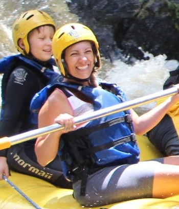

Our purpose is to provide individuals and groups with an exciting, memorable, and safe rafting experience. We aim to connect people with nature and adventure by offering professionally guided rafting trips, reliable equipment, and responsible outdoor recreation. Through our services, we seek to encourage teamwork, confidence, exploration, and appreciation for the natural environment while maintaining the highest standards of safety and customer satisfaction.